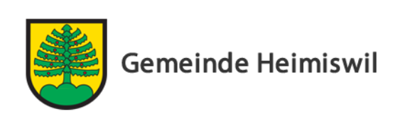

Volg Heimiswil
Lebensmittel und Produkte für den täglichen Bedarf. Der Laden bietet auch eine Postagentur.
Gut zu wissen · Schönes entdecken
Heimiswil ist ein ruhiger Ausgangspunkt für Wanderungen, Kultur und Ausflüge. Hier findest du unsere Tipps für unterwegs sowie wichtige Adressen und praktische Informationen für deinen Aufenthalt.


Für den täglichen Bedarf und feine Produkte aus der Region.
Lebensmittel und Produkte für den täglichen Bedarf. Der Laden bietet auch eine Postagentur.
Fleisch, Wurstwaren aus eigener Produktion und regionale Spezialitäten.
Saisonales Gemüse und weitere frische Produkte direkt vom Betrieb.
Bitte ruf in der Praxis vorgängig an, um einen Termin zu vereinbaren.
Arztpraxis in Heimiswil.
Apotheke in Burgdorf, an der Bahnhofstrasse.
Die Notfallstation ist rund um die Uhr erreichbar.
Wähle direkt die passende Notrufnummer. Für medizinische Notfälle erreichst du die Sanität rund um die Uhr.
Hügel, Wälder, Aussicht und ein erfrischendes Bad an der Emme.
Rund um Heimiswil führen Wege durch Wälder, Wiesen und die typische Emmentaler Hügellandschaft. Besonders schön sind die Höhenzüge und Aussichtspunkte auf den Eggen.
Die Brätlistelle liegt an der Höhenwanderung zwischen Burgdorf, Lueg und Rachisberg. Vor Ort gibt es einen überdachten Unterstand, Grillmöglichkeiten, Sitzplätze und eine Kühlbox.
Ein beliebter Aussichtspunkt mit weitem Blick über die Hügel und Täler des Emmentals. Der Besuch lässt sich gut mit einer Wanderung verbinden.
Bei der Heimiswilbrücke in Burgdorf laden Kiesbänke zum Verweilen, Grillieren und Baden ein. Bitte beachte die örtlichen Hinweise und die Strömung der Emme.
Eine entspannte Freizeitidee für Gross und Klein.
Eine wetterunabhängige Möglichkeit für Bewegung und Badespass.
Ein Wahrzeichen von Heimiswil
Die Eibe ist ein Wahrzeichen von Heimiswil und diente als Vorlage für das Gemeindewappen.
SRF-Beitrag zur Eibe anhören ↗
Historische Orte, Kunst und regionale Handwerkskunst.
Spaziere durch Ober- und Unterstadt und entdecke die historischen Gassen und Gebäude. Das Schloss bietet Ausstellungen, Einblicke in die Geschichte und einen schönen Blick über die Stadt.
Das Museum ist dem Werk von Franz Gertsch gewidmet und zeigt auf einem Teil der Ausstellungsfläche Wechselausstellungen zeitgenössischer Kunst. Eine schöne Idee auch bei schlechtem Wetter.
In Lützelflüh erfährst du mehr über den Schriftsteller Jeremias Gotthelf und das Leben im historischen Emmental.
Entdecke die Herstellung des Emmentaler Käses und die regionale Käsetradition in Affoltern im Emmental.
In Trubschachen dreht sich alles um die bekannte Schweizer Biscuitkultur. Der Besuch lässt sich mit einer Fahrt durch das Emmental verbinden.
An zahlreichen Stationen können Familien und Erwachsene ihre Sinne spielerisch entdecken und ausprobieren.
Mit dem öffentlichen Verkehr oder dem Auto gut erreichbar.
Die Bundesstadt lockt mit der UNESCO-Altstadt, den Lauben, dem Zytglogge, dem Bärengraben und dem Rosengarten mit Blick über die Dächer.
Entdecke die barocke Altstadt, spaziere an der Aare und gönn dir eine Pause in einem der vielen Cafés und Restaurants.
Schloss, Altstadt und Uferpromenade machen Thun zu einem lohnenden Ausflugsziel – besonders an einem sonnigen Tag am Wasser.
Aktuelle Veranstaltungen, Wanderungen und Ausflugsideen.
Inspiration für Ausflüge, Erlebnisse und regionale Veranstaltungen.
Golfplatz in der Region für eine sportliche Auszeit in der Landschaft des Emmentals.
Bitte prüfe Öffnungszeiten, Reservationen, Wetterbedingungen und Verbindungen des öffentlichen Verkehrs direkt beim jeweiligen Anbieter.
Öffnungszeiten und Angebote können sich ändern. Die verlinkten Anbieter informieren über den aktuellen Stand.